かならずお読みください→
こんなはなしをやりました
リハビリテーション病院のニーズについてこの文章は、平成26年2月20日、ライフケア関連産業推進事業 地域新産業戦略推進事業
平成25年度医療現場見学会にて大島がお話しした内容を再構成したものです。
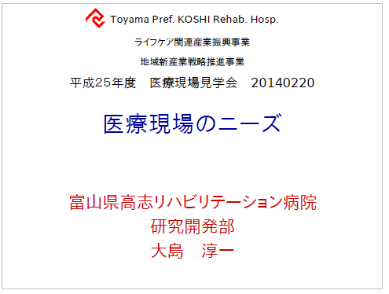どんな理由か私にはわかりませんが、リハビリテーション病院という名前がつくところはどちらも交通の便がよくありません。当院もこの例にもれず、富山市のはずれの交通の不便な場所にございます。皆さん、ようこそおいでくださいました。ありがとうございます。本日はよろしくおねがいいたします。
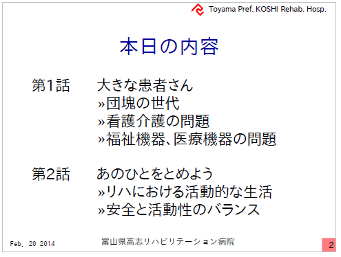本日はこのようなお話を準備しております。一番目は『大きな患者さん』についてです。ここ最近、『団塊の世代』とか『戦争を知らないこどもたち』などと呼ばれている方々が当院を利用される様になってきました。何人かの方々とお付き合いさせていただいたなかで、看護介護や福祉機器に関係して気がついたことをお話させていただきます。
二番目は『あのひとをとめよう』というお話です。寝たきりゼロ運動というのがありました。いまもあります。寝たきりの長生きではよろしくない、いきいきながいきのほうがよろしいという、まあ反対する人は誰もいないんじゃないかという運動です。ところがこれをやるのはなかなか大変なのです。病気が完全に治ってからリハビリを始めるのでは遅いそうです。休んでいる間にみるみるお体が弱ってしまうそうです。ですのでまだまだという時から、ぼちぼち始めることになるのですが、この加減が実に難しいわけです。そのときのその人にぴったりの加減でいきいきしていただくわけです。ここで背伸びをし過ぎると危ないこともあります。またあまりに大事にしすぎても困ってしまいます。このお話は、前の講演（訓練士による積極的訓練と安全の両立できる訓練機の話）にもありましたので、私はもうひとつのお話、だんだん元気になって歩けるようになってくると、どんどん遠くまで行ってしまうかたのお話をします。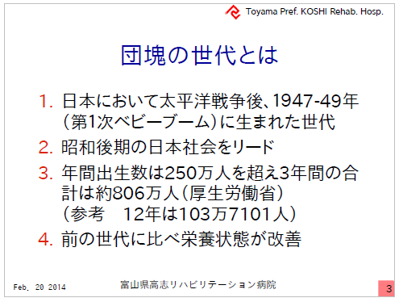『団塊の世代』についておさらいします。太平洋戦争終戦後、１９４７?４９年にたくさんの赤ちゃんが生まれました。第一次ベビーブームなどと呼ばれます。この人達が昭和の後期の日本をリードしてきました。この時期年間２５０万人以上、３年間で８００万人生まれたそうです。因みに２０１２年には１０３万人の赤ちゃんが生まれたのだそうですが、倍以上です。
団塊の世代に関する本はよほど人気があるのでしょうか。実にたくさんあって、いろいろいわれています。本日お話で注目するのは前の世代に比べて栄養状態が改善され、体格がよろしいという点です。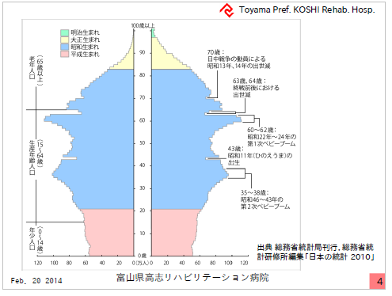人口ピラミッドです。出生数が戦後３年間で急増したのがわかります。戦争中に出生数が減った分が一気にこの時期に集中したのでしょうか。丙午（ひのえうま）の年にもがくんと減っています。いま丙午を若い人に説明するとぽかーんとします。無理もありません。話が横道にそれました。
因みに、外国でも同様のベビーブームはあるそうです。アメリカでも同じ時期に出生数が増えいくらか長い年数続いたそうです。中国ではもう何年かおそくなってから出生数が増えたのだそうです。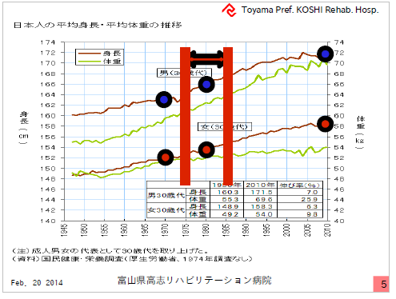ここにおもしろい統計があります。戦後の日本の成人の身長と体重の記録です。３０代でまとめてあるのでちょっとわかりにくいです。そこで、団塊の世代は赤い線の間になります。１９７５年は３０代になり始め、８５年は３０代を終わりつつある時期です。単純化するために中央の身長データに丸じるしをつけました。これが団塊の世代です。女性はそれほどでもありませんが、男性はその前の言うなら戦中生まれ世代に比べて身長がぐっと高くなっています。戦中と戦後の食料事情の違いではないかと思われます。今この世代が７０歳の一歩二歩手前に差し掛かっています。このグラフに現在の３０代男女をプロットします。男女ともさらに体格が良くなっています。ここで男性が男性を女性が女性を介護看護するならば問題も少ないのです。大きな人が小さな人を介護するわけです。しかし、当院の看護介護スタッフ１０１名のうち男性は６人でまだまだ少ないです。男性看護師の全国平均も５．１％だそうですので、多くの場合、女性の看護者がが男性の患者さんに対応することになります。
１０歳年長の方のデータにも印をつけました。最近１０年で患者さんの重さ、仕事の重さがぐっと増加したことがわかります。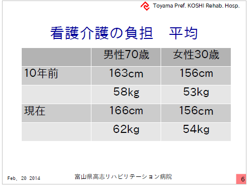比較のために数字をまとめました。３０歳女性の体格は１０年前とほとんど変化していませんが、７０歳男性の体格は数％改善しています。
しかしこの表にはいくつか問題もあります。
まず、３０代の時の体重が７０代まで同じか？みなさんはいかがでしょうか？（この日の聴衆は中高年の男性が多かった）多分この表より重い体重が真実に近いと思われます。
またこの数字はあくまでも平均です。もっと高くて重い患者さん、１８５センチ７５キロといった方もおられるのです。
平均よりも大きな患者は平均よりも大きな看護師が対応すればよいとのお考えもあるかもしれません。全くそのとおりです、そして昼間はそれができるとおもいます。しかし夜間となると人数が少ないので難しい場面が増えます。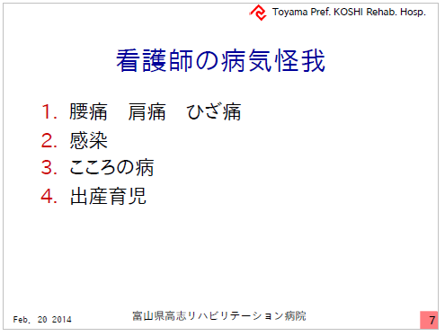これは看護師によくある怪我や病気です。職業病と呼ぶ人もいます。
腰痛肩痛は多いです。けが人が病人を介護しているというブラックジョークもあります。また、バイキンの多い職場ですので感染の心配もあります。また最近ではこころの病気もすくなくありません。また出産育児は病気でも怪我でもありませんが、女性看護師にとってきついハードルです。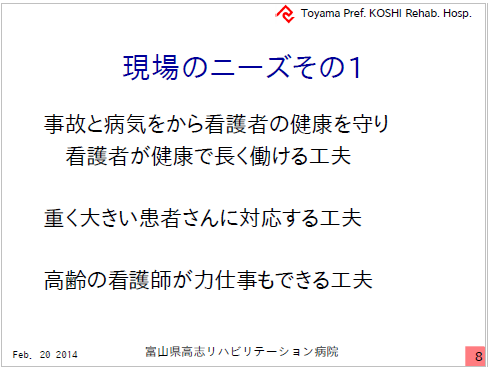ここでニーズの一番目です
事故と病気から看護者の健康を守り看護者が長く働ける工夫が必要とされています。そのような人が多いとも言えます。
具体的には、大きな患者さんに小さなからだで対応する工夫が必要です。
また先々週に逢坂悟朗さん（厚労省老健局老人保健課）の講演会がありまして、若い医師や看護師が少なくなり、もうしばらくすると医者も看護師も患者もみんな高齢者になってしまうのだそうです。そうなるとさきほどの例のように、３０代が看護するなどとも言っていられません。もっと具体的になります。
高齢の看護師が力仕事する工夫。
（こんなことをお話すると、どのかたも？？？といった反応をされます。しかし、中国では高齢者が1億人を越えました。じきに3億人も超えると言われています。儒教思想＋共産思想＋一人っ子政策の中国はこれから超巨大少子高齢社会に入っていきます。日本は一歩早く同じ問題に取りかかっています。さてこれは日本にとってピンチ？それともチャンス？）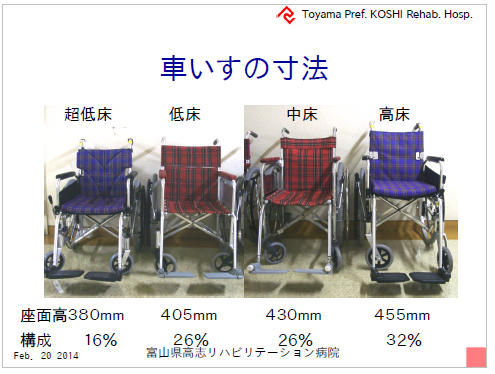ここから福祉機器のお話をします。当院では、市販の車いすで高床、中床、低床、超低床の４種類のサイズの車いすを準備し患者さんの体格に合わせてご提供しております。
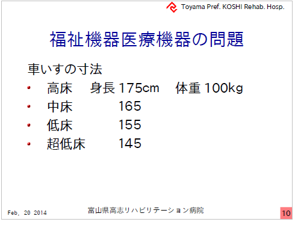それぞれのサイズの目安はこのくらいと考えています。耐荷重はいずれも１００キロです。最近、高床でも足りない長身、体重が１００キロを超える患者さんが徐々に増えてきました。しかし国産に市販品ではこの様な患者さんにお使いいただけるような大きなサイズはありません。
これでは仕方が無いので、何年か前に思い切ってドイツから、１８５センチ、耐荷重１５０キロの車いすを一台輸入しました。かなり高くつきましたが、一番応えたのは航空輸送料ではなく、関税でした。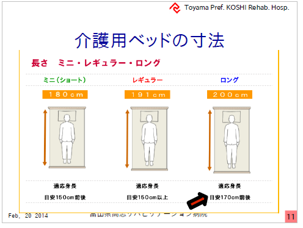こちらはとある介護用ベッドの会社の資料です。この会社の製品はミニ、レギュラー、ロングの３種類あるようです。ロングの適応身長は１７０センチとなっています。もっと長身の患者さんはどうするのでしょうか？
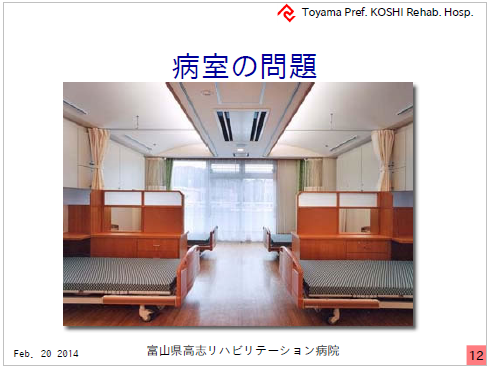これはとある病院の写真です。長身用ベッドがこの病室に来ると、通路が狭くなって車いすは通りにくくなるでしょう。このように病室の寸法まで影響されるのです。
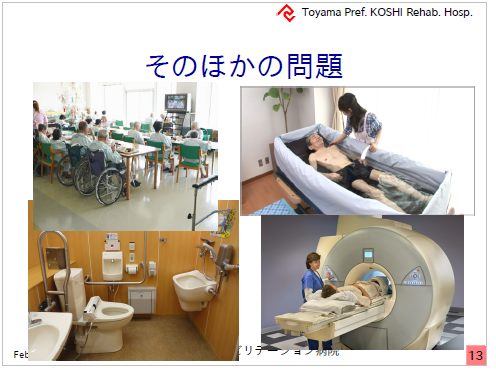この他、食堂のテーブルの高さ、浴槽の寸法、トイレの機材の寸法も問題になります。なかには大きすぎてＭＲＩに入れない人もいるそうです。（笑）『ちょっと狭いですが我慢してください』と言いたいところですが、お使いになる方は病気なので融通がつけにくいのです。
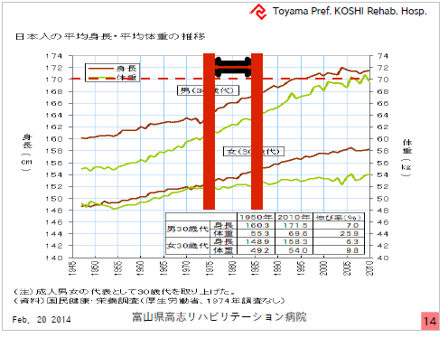先ほどのグラフです。
身長の上限１７０センチとはいかに問題かがおわかりいただけると思います。あと１０年もすれば、平均身長が上限をこえてしまいます。
ここで考えてみてください。ホテルのベッドでの窮屈な経験や衣服、この会場には男性が多いですが、とくにワイシャツのサイズでも不自由した経験はみなさんないと思います。私もありません。あれらの製品のサイズはすでに見直しされています。私は高校生のころＬサイズを着ていました。今はＭサイズです。身体が縮んだのではなく、規格が見直されたのです。ところが福祉機器の多くはまだ戦前生まれの人のサイズで作られています。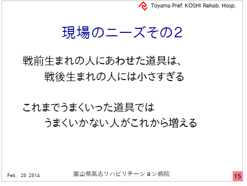ニーズその２です。
団塊の世代の皆さんは、かつてクラスの人数が多くて、教室で窮屈で苦労されたそうです。今また車いすが窮屈で苦労されようとしています。このようなサイズの見直しによって商品価値が向上するのはまずまちがいありませんが、かなり大きなこのコストをどう負担するかが容易に決まらないだろうと思われます。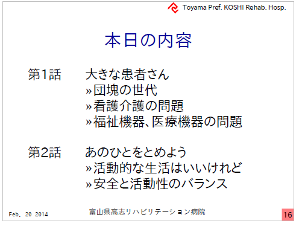ここから２番目のお話に入ります。
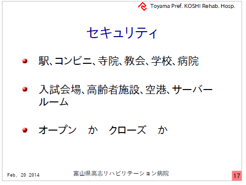駅、コンビニ、寺院教会、学校、病院 これらと 入試会場、高齢者施設、空港、サーバールーム
はセキュティの視点から２つに区分されます。
前者はＯｐｅｎ 後者はClosed です。
いろいろ事件もありましたので、最近ではClosedな学校も多いそうです。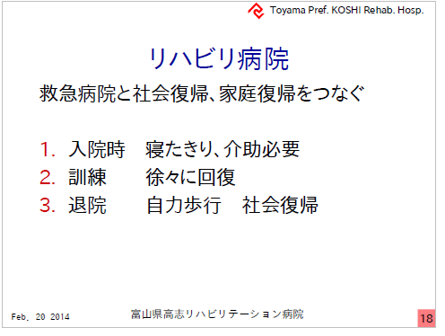リハビリテーション病院は、救急病院と社会復帰、自宅復帰の間に位置しております。入院（転院）の時は、寝たきりで介護が必要な方も訓練によって徐々に回復し、退院のときにはご自分で歩いてお帰りになります。正しくは自動車のところまで歩くのです。これが私達の任務、理想的ストーリーです。
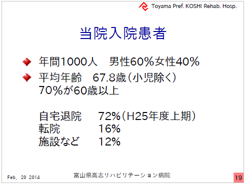当院の状況を簡単にまとめました。入院患者さんは年間約１０００人、男性６割女性４割、子供さんが少し、平均年齢は６７．８歳です。（団塊の世代ピタリ賞です）
理想通りにご自宅に帰られる方が７割、色々な事情で３割の方はうまくいきません。その理由はそれぞれ異なります。うまくいかない理由でよくよくあるのが、認知症です。
先程OpenとClosedの話をしました。リハビリテーション病院では、
Openにすべき多くの患者さんのなかにClosedにすべき何人かの方が混じっているのです。あとでまたこの話題に戻ってきます。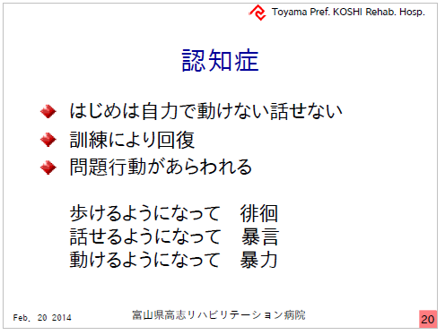認知症は、リハビリテーション病院にいる間に現れる、はっきりすることがよくあります。
はじめの頃は麻痺も強くて、動けない、歩けない、話せない人が訓練の結果それまで出来なかった徘徊ができるようになる。暴言も暴力もできるようになるわけです。
ドラマチックですが、こんなドラマ見たことがありません。とくに介護看護者への暴力はマスコミで取り上げられることは大変少ないです。（まずありません）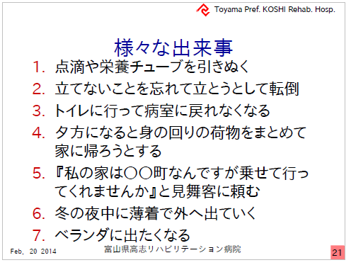これまでも色々な出来事がありました
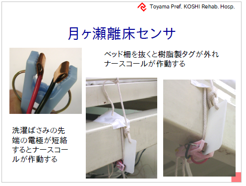何かが始まったら、すばやく駆けつけたい。それ以外は仕事をしたい。これが多くの看護師介護士のニーズです。
このニーズにこたえるために色々なものを作って来ました。
とくにこの月ヶ瀬式は単純な仕組みですので、現場から色々な使い方が提案されて用途が広がっています。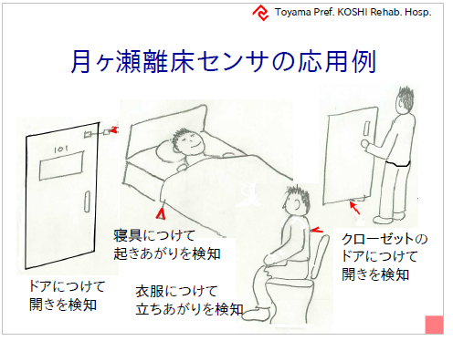またご覧の通りのものですのから非常にコストが低くなっています。
つけるか付けないか迷ったらつける（空振りしてもいいが見逃しはしない）
緊急の時は引きちぎって（破壊して）かまわない
値段のことは考えなくていい
といった現場本位の運用が可能になっています。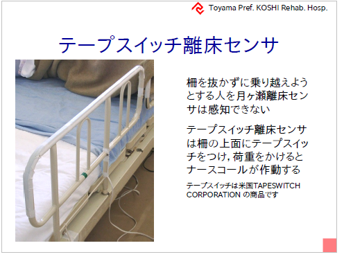その後いろいろな人とお会いしました。なかにはろくに立てないのに柵を引き抜かずまたごうとする人がいました。この様な人には触ったら作動する柵を作りました。
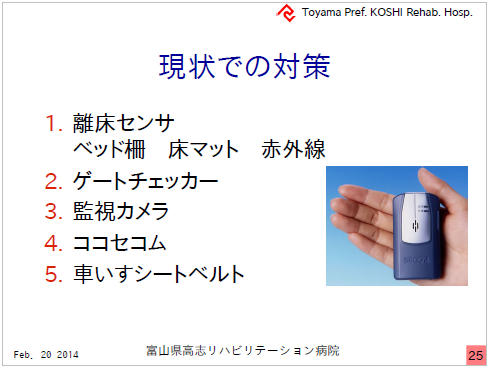手作りや製品を何重にも組み合わせて、防護を幾重にも張り巡らせるのが理想です。
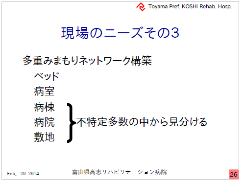ところが、ベッドや病室はなんとか防御できるのですが、もう少し広くなると難しくなります。
転倒の危険も少なくなったので、病棟内なら自由に歩きまわってもよい、ただし戻ってこれなくなるのでエレベータはダメ、階段は危ないのでダメ。ベランダもだめ。。。このような要望に応えることができません。
Openの人々の中にClosedの人が混じってエレベータにのった時、止めなくてはいけません。
範囲が広くなるといなくなったことを確認するのが簡単でなくなります。
また入り混じった人のなかから特定の人をみつか出すのが容易にできません。
現状では安全を過剰に優先するしか方法がありません。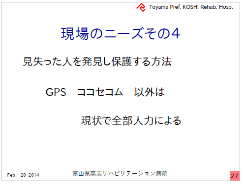ある看護師長さんがお家を新築されました。
『〇〇団地？病院から近いところですね？』
『だって職場でなにか起きたらすぐに駆けつけられるようにと…』
患者さんを見逃すと人力で探す方法しかありません。
看護職にはこのような場合、職場から非常召集がかかります。
これでは休みの日にも気が休まりません。気の毒なことです。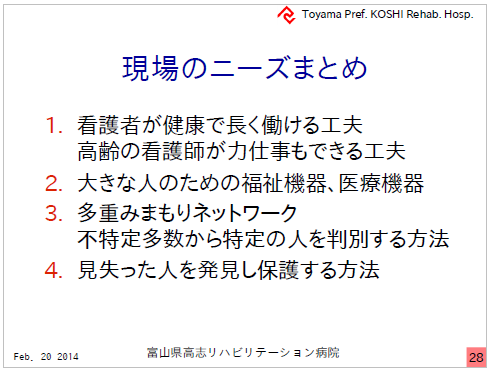本日の私のお話のまとめです。
本日はどうもありがとうございました。
2014/03/07 公開研究企画課リハ工学科にもどる